Deskripsi
Cancer seringkali dikenal karena kelembutan, kepekaan emosional, dan kesetiaan mereka. Mereka juga merupakan seorang yang penyayang dan perhatian terhadap sesama. Mereka juga memiliki intuisi yang kuat.
Kompatibel
Cancer sangat cocok dengan scorpio dikarenakan sifat mereka yang saling peduli dan mahir mendukung secara emosional. Cancer juga kompatibel dengan pisces yang sama sama sensitif dan intuitif. Mereka cocok sebesar 90-95% Sedangkan Aquarius dan Gemini sangat bertentangan dengan Cancer. Dikarenakan sifat mereka rasional, independen, dan tidak stabil. Mereka hanya cocok sebesar 15%.
Tokoh Zodiak

Agnez Monica
1 Juli

Adhisty Zara
21 Juni

Elon Musk
28 Juni